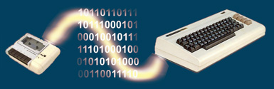
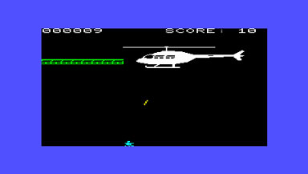

WAV2VIC - A utility that converts C2N tape data stored in .wav files to Vic-20 data files.
Author
arthurguru.
Intro
In 2006, I was overwhelmed that someone had brought this hip early eighties thang back to life again in virtual form - the Commodore Vic-20 and C64 were making a comeback!
Then suddenly it became serious. Having long departed with my Vic-20 I was surprised to learn that I still had my old Vic-20 cassette tapes for the C2N tape storage device - these tapes were already well over 20 years old. After trying some futile efforts to read these tapes using some of the converters on the internet, I became concerned that the constant attempts would damage my old tapes. When I backed up these cassette tapes to .wav files it occurred to me that I should write a utility that reads these .wav files and spits out Vic-20 files.
And thus WAV2VIC was born.
Synopsis
WAV2VIC [-d x] [-h y] [-t z] file.wav
Option -d turns on debugging.
To do medium level debugging set x to 1
To do high level debugging set x to 2
Defaults is 0Option -h adjusts the initial bytes to skip what usually comprises of the .wav header information.
Defaults to 44 (for 8 bit, mono, 22Khz, medium sized file).
Don't worry about being too accurate, all you need to get to are the initial sync tones in the files to avoid initial false readings.Option -t adjusts the threshold for calculating the difference between 1's and 0's in wave format.
Defaults to 15 (for 8 bit, mono, 22Khz).Parameter file.wav contains a recording of your C2N tape and should be an 8 bit, mono, 22Khz or 44Khz .wav file.
Execution
When you run WAV2VIC it will read the .wav file supplied as the argument and create files of all the header and data blocks it encounters in the .wav file. As each header and data blocks are being read, WAV2VIC writes them to a unique .RAW file and will also print out a report on the integrity of these blocks including start-bit, parity, checksum, header and block length checks.
Given that on tape 4 blocks (2 header + 2 data) define a Vic-20 file and that these are roughly duplicates of each other, WAV2VIC will assemble a .PRG file if at least one correct header and data blocks are read. The .PRG file is what you use for your Vic-20 emulator, if the .PRG works you can throw away the .RAW files, if it doesn't then use them to try and salvage the situation using a binary editor like vim.
If you get start bit errors when reading the .wav file try adjusting the threshold level (option -t) by varying it in small increments of 1 or 2.
How it Works
Note: The following information is completely unreliable because I had to figure it out for myself.
A Vic-20 file stored on tape looks like this (if you don't believe me get your magnifying glass out):
----ssssss[header1]ss[header2]ssss[data1]ss[data2]ss--------
Where - = no signal, s = sync signal
hearder1 = header2 (equal in data segment not in block header frame)
The headers also contains some details of the data blocks (filename and data segment length)
data1 = data2 (equal in data segment not in block header frame)
Generally, the data file is what you feed to your Vic-20 emulator e.g. PCVIC, VICE, etc.There is some variation to this based on the header type flag but for me that is too much information. Because WAV2VIC simply dumps the data segments of each block to individual files then it doesn't matter what type WAV2VIC thinks they are. Maybe you can figure it out better than the program can - at least you have the data now.
Bits are stored uniquely on a C2N tape.
A big wave followed by a smaller wave represents a logical 1.
A small wave followed by a larger wave represents a logical 0.
Waves of equal length represent a sync signal.
Actually, there are 3 types of waves: big (used for the start bit), medium and small.
WAV2VIC doesn't care much for that instead it reads the length of the rising part of the wave and compares that with the length of the rising part of the next wave. The difference whether positive or negative determines what bit value it represents. Of course, nothing is perfect with sync signals, so if the absolute value of the difference between wave1 and wave2 is less than the default threshold value of 15 then WAV2VIC will consider them equal (this can be adjusted using the -t option).If you are good with wave file editors e.g. Nero Wave File editor, then you stand a better chance of producing less block synchronisation errors by chopping up the wave file where these synchronisation errors occur.
Standard Disclaimer
I take no responsibility for any outcome real or imagined that you may or may not inflict upon yourself.
Download
This software is free to use for its intended purpose.

Screenshot of my JetRanger game. Not a bad programming effort for a 14 y.o. and a computer with only 3Kb (3583 bytes) of memory!Enjoy, arthurguru, May 2006.